Ammo Tracker
Munitionsbestand und Training für Sportschützen. Auf iPhone und iPad, ohne Konto, ohne Cloud.
Worum es geht
Ammo Tracker zeigt dir jederzeit, wie viel Munition du von welcher Sorte hast, und zieht beim Training ab, was du verschossen hast. Dazu kommen Einkäufe mit Preisen, ein Schusszähler pro Waffe und eine Statistik über deine Trainings.
Die App läuft auf iPhone und iPad und braucht nach der Installation kein Internet. Es gibt kein Konto, keine Cloud, keine Werbung und keine Statistik-Dienste. Alles, was du einträgst, bleibt auf deinem Gerät. Nach außen geht nur, was du selbst als Sicherung verschickst.
Installation
Die App wird über Safari auf den Home-Bildschirm gelegt, einen App Store braucht es nicht.
- Die Adresse dwal1n.github.io/ammo-tracker in der Safari-App öffnen. Andere Browser und die eingebauten Browser anderer Apps können nicht installieren.
- Auf das Teilen-Symbol tippen (Quadrat mit Pfeil nach oben, je nach iOS hinter den drei Punkten).
- In der Liste ganz unten auf Mehr tippen und Zum Home-Bildschirm wählen. „Als Web-App öffnen“ eingeschaltet lassen, dann Hinzufügen.
- Ab jetzt die App immer über das Symbol Munition starten.
Inhalt
Die fünf Bereiche
Unten in der App sitzt eine Leiste mit fünf Bereichen. Läuft gerade ein Training, zeigt ein roter Punkt am Training-Symbol das an.
Munition nach Kaliber und Sorte, Packungen scannen, Einkäufe und Korrekturen
Am Stand Durchgänge eintragen, am Ende vom Bestand abziehen
Statistik und alle Einträge, jeder lässt sich ändern
Schusszähler und Wartungserinnerung
Kaliber, Darstellung, Sicherung, gelernte Packungen
Erste Schritte
In vier Schritten ist die App eingerichtet. Plane für die Inventur etwas Zeit ein, danach geht alles schnell.
- Mehr → Meine Kaliber: die Kaliber antippen, die du schießt. Danach zeigen alle Auswahllisten nur noch diese statt aller 24.
- Bestand füllen: am schnellsten per Scanner (Kapitel 5). Ohne Scanner über das Plus oben rechts im Bestand eine Sorte anlegen und dort gleich den aktuellen Bestand eintragen.
- Waffen anlegen: unter Waffen jede Waffe mit Kaliber eintragen. Beim Training schlägt die App dann die passende Munition vor.
- Sichern: unter Mehr → Sicherung und Abgleich auf Sicherung erstellen tippen.
Bestand
Oben steht die Patronenparade: jedes Kaliber im echten Größenverhältnis mit seiner Gesamtzahl. Ein Tipp auf eine Patrone springt zum Kaliber in der Liste darunter.
In der Liste siehst du jede Sorte mit Bestand und Preis pro Schuss. Die Kaliber stehen nach Bestand sortiert, das größte zuerst.
Neue Sorte anlegen
Das Plus oben rechts. Kaliber, Hersteller und Bezeichnung wählen oder eintippen, Vorschläge erscheinen unter dem Feld. Geschossgewicht, Geschossform und Hülsenfarbe sind optional, die beiden letzten bestimmen nur das Bild.
Preis pro Schuss
Die App rechnet den Durchschnitt aller Einkäufe mit Preis. Ohne Preis steht dort nichts, die Sorte funktioniert trotzdem.
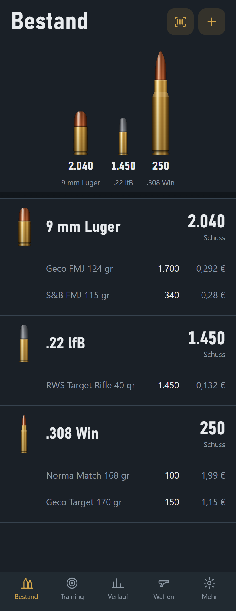
Eine Sorte antippen
öffnet ihre Übersicht mit Bestand, Preis pro Schuss, Wert und den letzten Einkäufen. Darunter drei Knöpfe:
- Einkauf eintragen: Menge, Preis, Händler und Datum. Die Menge kommt zum Bestand dazu.
- Bestand korrigieren: die tatsächlich gezählte Menge eintragen. Die App gleicht den Unterschied aus, z. B. nach einer Inventur.
- Sorte bearbeiten: Angaben ändern, Sorte ausblenden (aufgebraucht, bleibt im Verlauf) oder löschen.
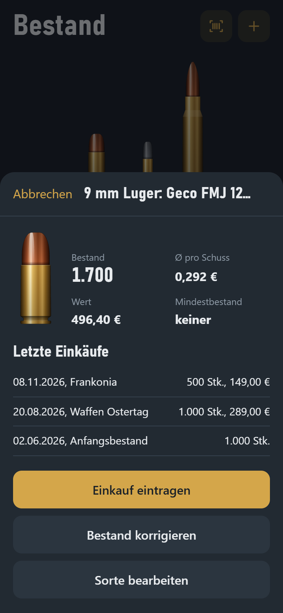
Mindestbestand
Die App warnt, wenn die Munition knapp wird. Am praktischsten ist die Grenze für ein ganzes Kaliber: Dann zählt die Gesamtzahl, egal von welchem Hersteller die Patronen stammen.
Für ein Kaliber
- Im Bestand auf den Kalibernamen tippen, z. B. „.308 Win“.
- Den Mindestbestand eintragen, z. B. 500, und Sichern.
Neben der Gesamtzahl steht jetzt „min. 500“. Fällt die Summe aller Sorten darunter, werden die Zahl und die Patrone in der Parade rot, und neben dem Namen erscheint der Hinweis Mindestbestand.
Für eine Sorte
Unter Sorte bearbeiten lässt sich zusätzlich eine Grenze für eine einzelne Sorte setzen. Fällt sie darunter, wird diese Sorte rot markiert.
Wer nur die Gesamtzahl im Blick haben will, lässt das Feld bei den Sorten leer. Ein leeres Feld heißt immer: keine Warnung.
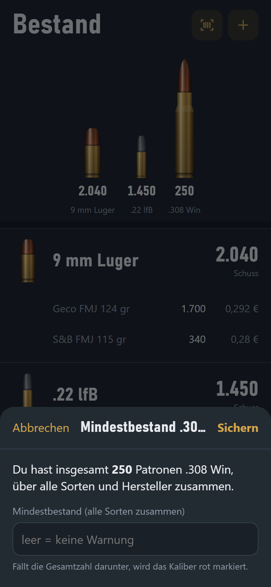
Packungen scannen
Mit dem Scanner buchst du Packungen per Strichcode. Jede Packungsart lernt die App einmal, danach reicht ein Scan und die Anzahl.
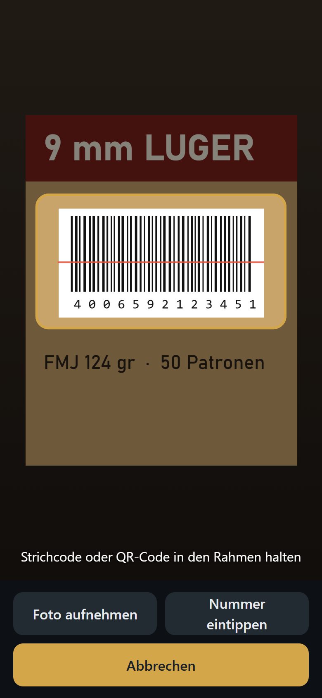
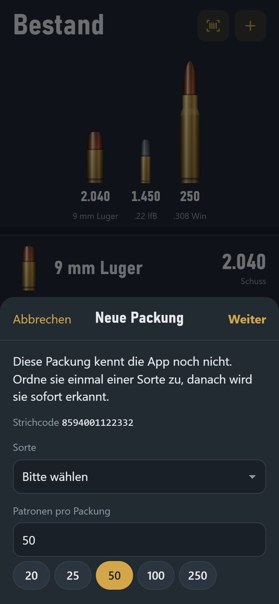
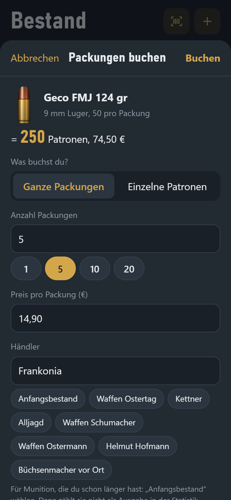
Beim ersten Scan einer Packungsart
- Im Bestand oben auf das Strichcode-Symbol tippen und den Strichcode in den Rahmen halten.
- Die Sorte wählen. Gibt es sie noch nicht, Neue Sorte anlegen … Darunter die Patronen pro Packung, dann Weiter.
- Bei einer neuen Sorte den Bestand im Formular leer lassen und Anlegen.
- Jetzt kommt Packungen buchen.
Bei jedem weiteren Scan
Anzahl über 1, 5, 10, 20 oder das Feld eingeben, die App rechnet live mit. Preis und Händler sind optional und vom letzten Mal vorausgefüllt. Dann Buchen oder Buchen und weiter scannen.
Besondere Fälle
- Angebrochene Packung: oben auf Einzelne Patronen umschalten, gezählte Menge eintragen. Der Preis wird anteilig gerechnet.
- QR-Code abgelehnt: Manche Hersteller, etwa Magtech, drucken auf jede Packung denselben QR-Code. Dann den Strichcode scannen.
- Falsche Sorte erwischt: beim Buchen auf Andere Sorte zuordnen.
- Kamera klappt nicht: Nummer eintippen (die Ziffern unter dem Strichcode, die App prüft sie auf Tippfehler) oder Foto aufnehmen.
Training am Stand
Du trägst nach jedem Durchgang ein, was du verschossen hast. Vom Bestand abgezogen wird erst, wenn du das Training beendest.
- Training → Training starten. Stand oder Verein eintragen (optional, wird gemerkt).
- Waffe und Munition wählen. Die zuletzt zu dieser Waffe benutzte Sorte ist vorausgewählt.
- Nach jedem Durchgang auf die Anzahl tippen: 5, 10, 15, 20, 25 oder 50. Für andere Mengen Andere Anzahl. Der Zähler oben zählt hoch.
- Training beenden: Die App zeigt Schuss und Kosten. Abschließen und abziehen bucht alles vom Bestand ab.
Was noch geht
- Waffe oder Sorte wechseln: auf die Zeile mit Waffe und Munition tippen. Rechts steht, wie viel von der Sorte noch übrig ist.
- Durchgang falsch: über den Papierkorb löschen, ein Hinweis bietet Rückgängig an.
- App zwischendurch geschlossen: Das Training bleibt erhalten. Beim nächsten Öffnen landest du direkt wieder darin.
- Training verwerfen: nichts wird gespeichert oder abgezogen.
- Schnell hintereinander getippt: Jeder Tipp zählt.
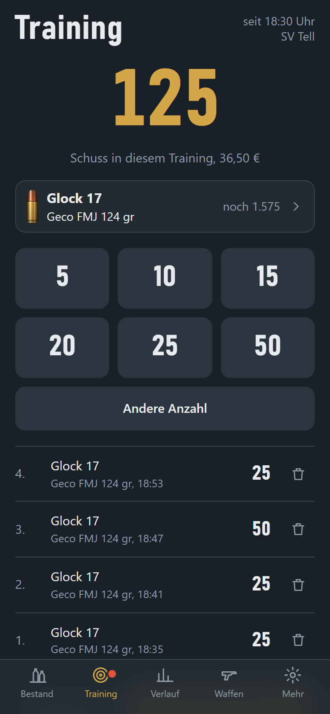
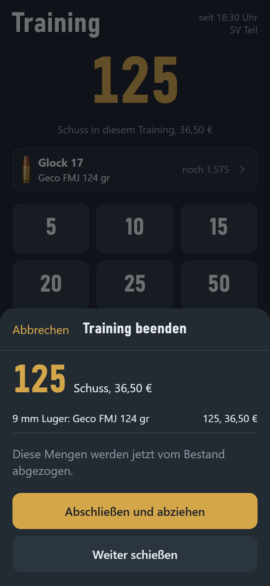
Waffen, Verlauf und Statistik
Waffen
Jede Waffe hat einen Schusszähler, der mit jedem beendeten Training wächst.
- Waffe anlegen: Waffen → Plus, Bezeichnung und Kaliber eintragen.
- Schuss vor Nutzung der App: Weißt du ungefähr, wie viel du mit der Waffe schon geschossen hast, trag es ein. Der Zähler rechnet von dort weiter.
- Wartung alle … Schuss: Ist das Intervall erreicht, erscheint ein roter Hinweis. Nach der Wartung die Waffe antippen und Wartung erledigt.
- Waffe löschen: Trainings und Bestand bleiben unverändert.
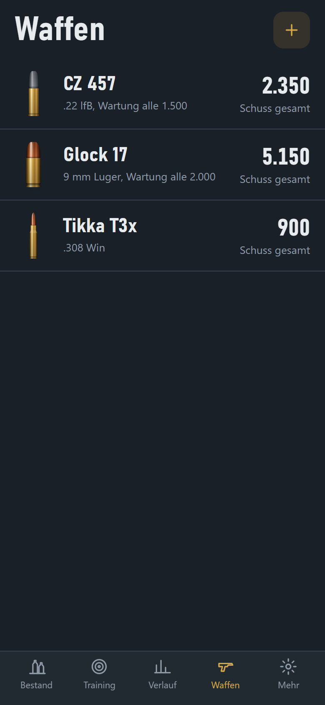
Verlauf und Statistik
Oben stehen die Zahlen des laufenden Jahres: Schuss, Trainings, Kosten der verschossenen Munition und Ausgaben für Einkäufe. Darunter die Schuss pro Monat über zwölf Monate und die meistgeschossenen Kaliber.
Die Chronik listet alle Trainings, Einkäufe und Korrekturen, das Neueste zuerst. Ein Tipp öffnet den Eintrag:
- Training: alle Durchgänge ansehen oder löschen. Die Patronen kommen dann zurück in den Bestand.
- Einkauf: Menge, Preis, Händler und Datum ändern oder löschen.
- Korrektur: löschen.
Einkäufe mit dem Händler „Anfangsbestand“ erscheinen als „Start“ und zählen nicht als Ausgabe.
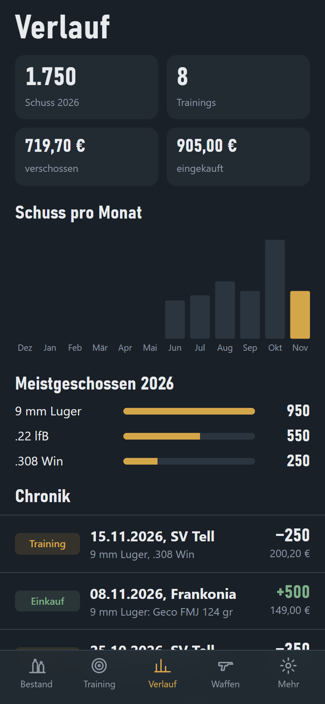
Mehr: Einstellungen und Sicherung
| Einstellung | Wozu |
|---|---|
| Meine Kaliber | Nur diese erscheinen in Auswahllisten. Kaliber mit Sorte oder Waffe bleiben immer wählbar |
| Patronenbilder | Realistisch oder technische Zeichnung mit Maßen in mm |
| Erscheinungsbild | Dunkel, hell oder wie das iPhone eingestellt ist |
| Gelernte Packungen | Patronen pro Packung ändern oder Verknüpfung löschen |
| Eigene Kaliber | Fehlendes Kaliber mit Bauform und Maßen anlegen, das Bild wird daraus gezeichnet |
| Handbuch | Dieses Handbuch, auch ohne Empfang. Oben führt „Zurück zur App“ wieder zurück |
| Alle Daten löschen | Löscht alles auf diesem Gerät, mit zwei Rückfragen. Vorher sichern |
Ganz unten steht die Version der App mit Datum. Über der Tastatur erscheint eine Leiste mit Fertig, ein Tipp auf eine freie Fläche schließt die Tastatur ebenfalls.
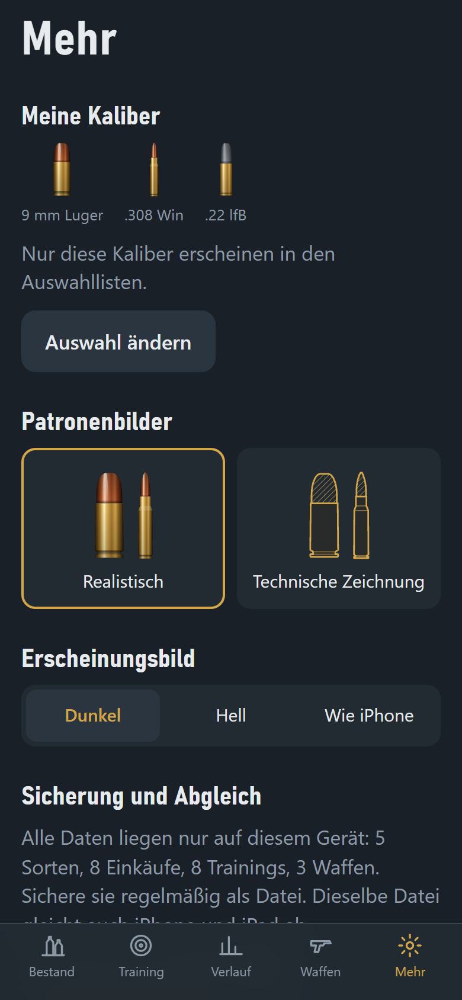
Sicherung und Abgleich
Deine Daten liegen nur auf dem Gerät. Eine Sicherung als Datei schützt sie, falls das Handy verloren geht oder kaputt ist.
Sicherung erstellen, dann im Teilen-Menü z. B. In Dateien sichern oder per AirDrop verschicken. Ein Ort außerhalb des iPhones (iCloud Drive, ein anderer Rechner) ist sicherer. Nach 30 Tagen ohne Sicherung erinnert die App.
iPhone und iPad abgleichen, ganz ohne Server:
- iPhone: Sicherung erstellen, per AirDrop ans iPad.
- iPad: Datei laden und Zusammenführen.
- iPad: Zurückschicken, auf dem iPhone ebenfalls zusammenführen.
Zusammenführen behält alles von beiden Geräten, bei gleichem Eintrag gewinnt die neuere Änderung. Alles ersetzen ist nur für den Umzug auf ein neues Gerät.
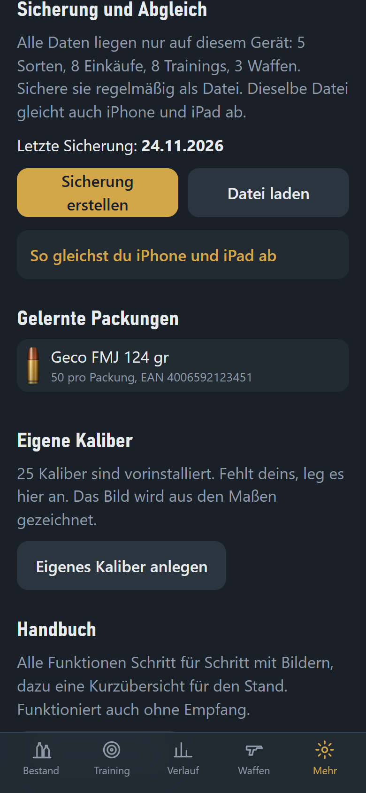
Updates und häufige Fragen
- App mit Internet öffnen und ein paar Sekunden offen lassen.
- App ganz schließen: vom unteren Rand hochwischen, kurz halten, die App wegwischen.
- App wieder öffnen. Die Version steht ganz unten unter Mehr.
Ganz unten auf Mehr tippen. Fehlt es auch dort, ist der Link nicht in Safari geöffnet, sondern im Browser einer anderen App. Adresse kopieren und in Safari einfügen.
Vermutlich wurde beim Anlegen ein Bestand eingetragen und danach noch gescannt. Sorte antippen, Bestand korrigieren, gezählte Menge eintragen.
Die Inventur wurde als Einkauf gebucht. Im Verlauf die Einkäufe antippen und als Händler „Anfangsbestand“ eintragen.
Auf den Kalibernamen tippen und dort den Mindestbestand setzen. Die Felder bei den Sorten leer lassen.
Näher ran, gutes Licht, Strichcode quer in den Rahmen. Bei sehr kleinen Codes Nummer eintippen.
Der Hersteller druckt auf alle Packungen denselben QR-Code. Den Strichcode scannen.
Das macht iOS bei Web-Apps so. Mehrere Packungen mit „Buchen und weiter scannen“ am Stück scannen, dann fragt es nur einmal.
App mit Internet öffnen, ganz schließen, wieder öffnen. Unter Mehr prüfen, welche Version angezeigt wird.
Einfach die Adresse schicken. Er bekommt eine leere App mit eigenen Daten und sieht nichts von deinen.
Nein. Sie liegen nur auf deinem Gerät, die App darf keine Verbindung nach außen aufbauen. Weitergegeben wird nur, was du selbst verschickst.
Kurzübersicht für den Stand
Zum Ausdrucken und Einlegen in den Waffenkoffer.
- Training → Training starten
- Waffe und Munition prüfen
- Nach jedem Durchgang Anzahl antippen
- Training beenden → Abschließen und abziehen
- Bestand → Strichcode-Symbol
- Strichcode in den Rahmen
- Anzahl Packungen, Buchen
- Durchgang falsch: Papierkorb, dann Rückgängig
- Andere Waffe: Zeile mit Waffe und Munition antippen
- App zu: Training läuft weiter
- Bestand stimmt nicht: Sorte antippen, Bestand korrigieren
- Läuft ohne Empfang, auch im Flugmodus
- Rot heißt: unter dem Mindestbestand
- Mindestbestand: Kalibernamen antippen
- Alle 30 Tage sichern: Mehr → Sicherung erstellen
| Meine Waffen | Kaliber | Munition | Mindestbestand |
|---|---|---|---|